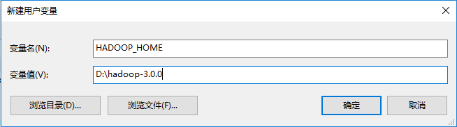
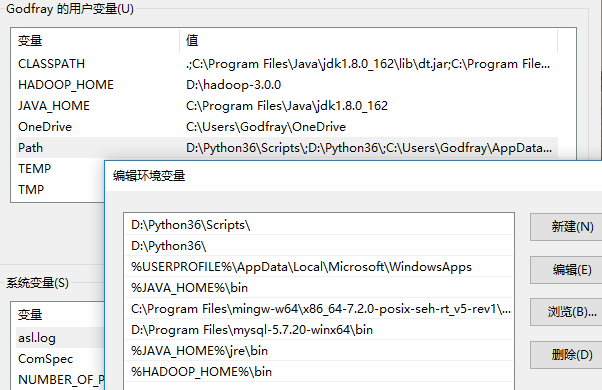
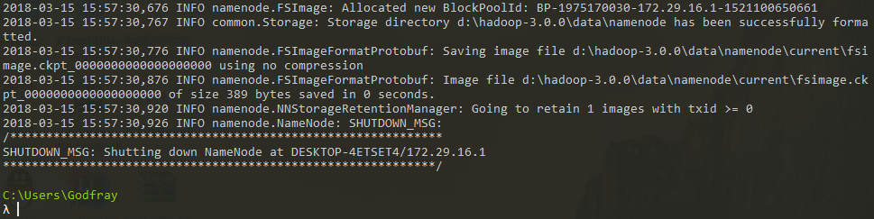
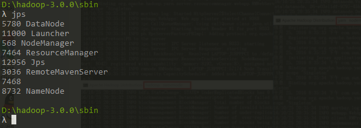
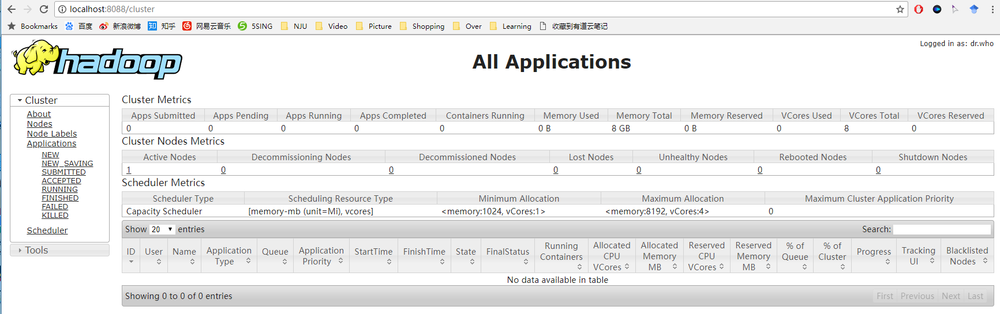
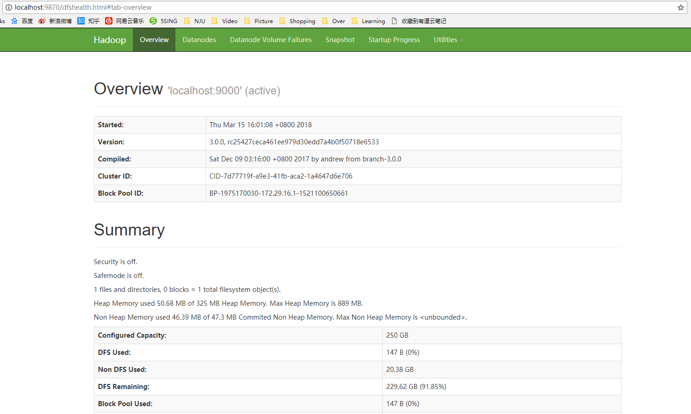
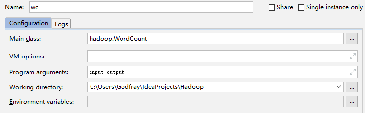
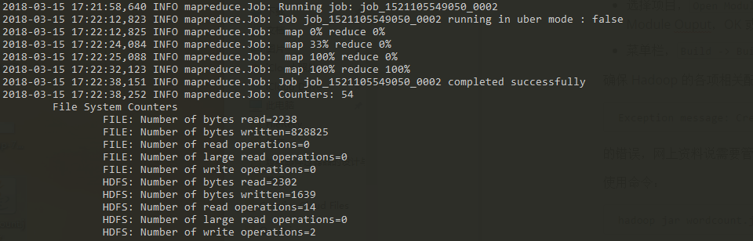
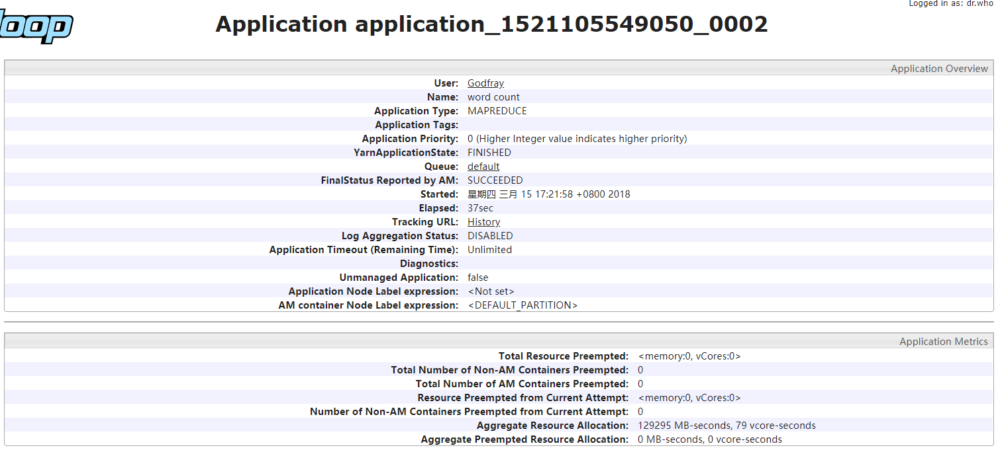
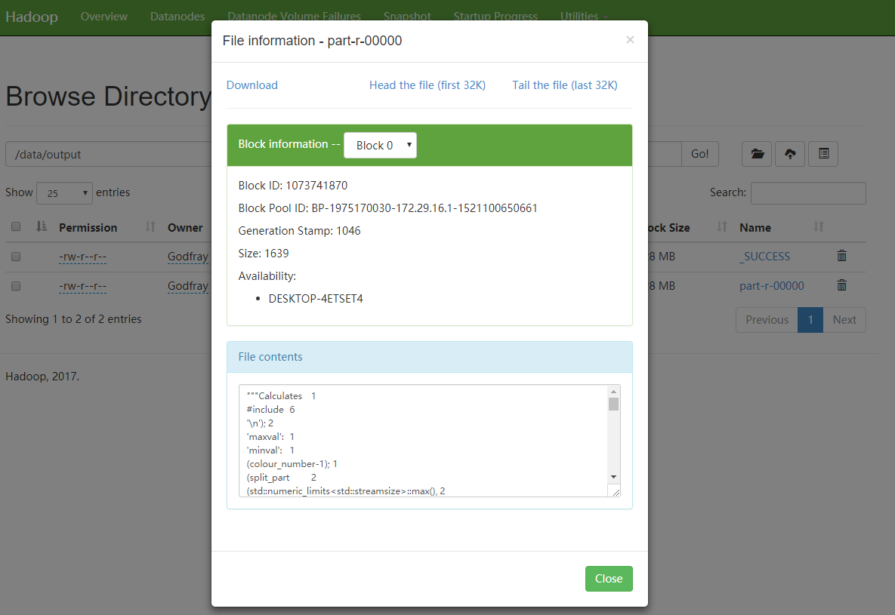

准备工作
- 安装并且配置好 JAVA 1.8，怕 JAVA 9 有坑；
- 从 Apache Hadoop 下载 Hadoop binary，这里使用的是 hadoop - 3.0.0 的版本；
- 从 Github 上下载在 Windows 环境中需要运行的
winutils.exe和hadoop.dll等“补丁”，选择对应的版本即可
Hadoop Go
将
hadoop-3.0.0.tar.gz解压到某目录下，这个目录中不要有中文和空格，否则可能会引起问题，如这里解压到D:\hadoop-3.0.0同时，在环境变量 - 用户变量中新建
HADOOP_HOME=D:\hadoop-3.0.0
在 Path 中添加 %HADOOP_HOME%\bin ，之后就可以在 cmd / powershell 中直接使用 hadoop 相关命令，不需要输入 Hadoop 的安装路径

进入
hadoop-3.0.0/etc/hadoop中，进行 Hadoop 配置，修改 5 个文件hadoop-env.cmd中需要修改第 25 - 26 行，将原本的set JAVA_HOME=%JAVA_HOME%前面加上@rem注释，设置为本地的JAVA_HOME的路径。注意如果JAVA_HOME的路径中由空格，会引起错误（JAVA_HOME is incorrect…），此处，C:\Program Files\Java\jdk1.8.0_162需要改为C:\Progra~1\Java\jdk1.8.0_162core-site.xml中的<configuration>标签内填入1
2
3
4
5
6
7
8<property>
<name>fs.defaultFS</name>
<value>hdfs://localhost:9000</value>
</property>
<property>
<name>hadoop.tmp.dir</name>
<value>file:/hadoop/tmp</value>
</property>第二个设置的
${hadoop.tmp.dir}的设置是因为，默认这个tmp文件在 C 盘，以普通用户启动的时候会有权限问题，必须要使用管理员身份运行 cmd，所以设置一个新的路径hdfs-site.xml中的<configuration>标签内填入1
2
3
4
5
6
7
8
9
10
11
12<property>
<name>dfs.replication</name>
<value>1</value>
</property>
<property>
<name>dfs.namenode.name.dir</name>
<value>file:/d:/hadoop-3.0.0/data/namenode</value>
</property>
<property>
<name>dfs.datanode.data.dir</name>
<value>file:/d:/hadoop-3.0.0/data/datanode</value>
</property>注意：这里需要在
HADOOP_HOME中新建一个data文件夹，再进入data新建namenode和datanode，也可以设置其他的名称，与设置中的一致即可。现在即便不新建，也会自动生成。也可以填写绝对路径，在 Windows 中，<value>标签中的路径前需要一个/，如/hadoop/data/namenode、/d:/hadoop/data/datanode等，不指名盘符，在之后通过 cmd 格式化 HDFS 时，就会当前盘符目录下生成对应的文件。mapred-site.xml（老版本好像只提供一个mapred-site.xml.template，自己新建一个或者改成这个名字就行） 中的<configuration>标签内填入1
2
3
4<property>
<name>mapreduce.framework.name</name>
<value>yarn</value>
</property>yarn-site.xml中的<configuration>标签内填入1
2
3
4
5
6
7
8<property>
<name>yarn.nodemanager.aux-services</name>
<value>mapreduce_shuffle</value>
</property>
<property>
<name>yarn.nodemanager.aux-services.mapreduce.shuffle.class</name>
<value>org.apache.hadoop.mapred.ShuffleHandler</value>
</property>
替换
hadoop-3.0.0/bin中的文件为 Github 上下载的文件内容，全部替换就行了，主要是winutils.exe和hadoop.dll，不放心的可以把原来的文件做个备份。格式化 HDFS 系统
在 cmd / powershell 中输入
hdfs namenode -format，进行 HDFS 格式化，不报错就 OK，同时会在之前设置的路径中生成一些文件。
启动 Hadoop
切换到
hadoop-3.0.0/sbin目录中，执行.\start-all.cmd，会启动四个服务，可以用jps指令查看：NameNode
DataNode
ResourceManager
NodeManager

如果都成功启动，访问
localhost:8088，可以查看 Hadoop 的任务管理、查看界面
访问
localhost:9870，在 Hadoop 3.x 中已经修改为 9870 端口，2.x 版本还是 50070 端口
Hadoop Programming - Word Count
不需要启动 hadoop，方便程序调试。
运行一个基本的 Word Count 程序，在 Intellij IDEA 中调试，新建 Maven 项目，在 pom.xml 中添加如下依赖项：
1 | <dependency> |
等待一段时间，项目 Auto-import 完成后，就可以测试 WordCount 程序。程序源代码来自 Apache Hadoop 3.0.0 Tutorials，稍作了一点修改。
1 | import java.io.IOException; |
这里没有涉及到 HDFS，所以输入文件 input 和结果输出 output，都是项目中的路径。这两个路径需要作为运行时的程序参数，可在 Intellij IDEA 中设置如下：

此外，Hadoop 使用 log4j 日志工具（log4j 1.x 版本的，目前已经升级到 log4j2 了，旧版本已经停止支持，Hadoop 好像还是不支持，也不知道如何正确设置 slf4j。）在 main/resources 下新建一个 log4j.properties，
1 | # initialize root logger with level ERROR for stdout and fout |
当然需要准备一些文本文件放在 input 中，成功运行后，控制台中会显示运行中的一些过程和信息，最终结果输出在 output 中。
Hadoop executes JAR
这一节将演示使用本地伪分布式（单机版）测试 Hadoop 程序。
数据准备
在 cmd / powershell 中，使用 hadoop fs 指令向 HDFS 中放入我们的测试文件，需要先新建文件夹，加上 -p 参数可以直接建立多层目录。
1 | # 新建输入文件夹 |
当然，也可以通过 localhost:9870 的 Utilities -> Browser the file system 功能查看文件。
使用 Hadoop 运行 JAR
先介绍下怎么在 Intellij IDEA 中打包可运行的 JAR 文件方法：
- 选择项目，
Open Module Settings，选择 Artifacts，新建一个 jar，选择 empty 即可，右边的加号点击添加 Module Ouput，OK 或者 Apply 保存即可 - 菜单栏，
Build -> Build Artifacts... -> build即可，通常会在项目的out文件夹中生成 jar 文件 - 千万不要加入
META-INF，要不然就要把打包好的 jar 中的META_INF\license删除
确保 Hadoop 的各项相关配置已经开启，测试时发现依旧需要以管理员权限启动各项服务，否则会有
1 | Exception message: CreateSymbolicLink error (1314) |
的错误，网上资料说需要管理员权限…
使用命令：
1 | $ hadoop jar wordcount.jar hadoop.WordCount /data/input /data/output |
即可以伪分布式方式运行 Hadoop 程序。
程序运行结果
首先会在 cmd 中出现运行信息，这与本地调试的命令行中输出的信息基本一致，会有一个关于进度的信息：

可以通过 localhost:8088 查看任务的运行情况。

最后，可以在 HDFS 中查看 WordCount 的统计结果，使用命令行方式查看：
1 | $ hadoop fs -get -f /data/output . |
还有一种方式就是在 localhost:9870 的 Utilities -> Browser the file system 中查看：
